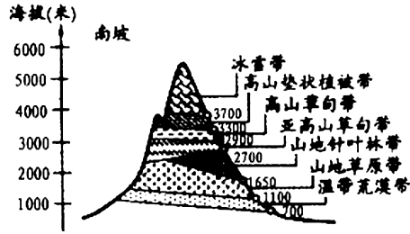
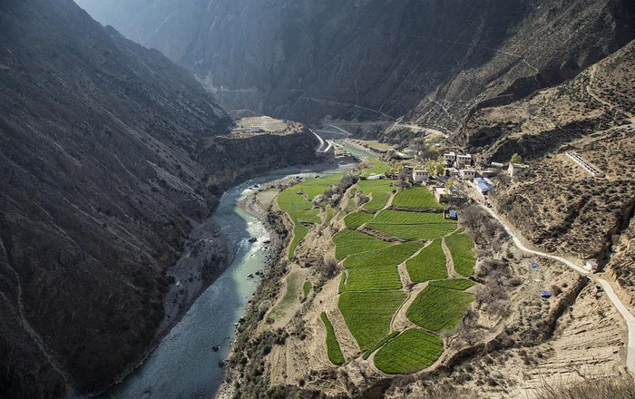
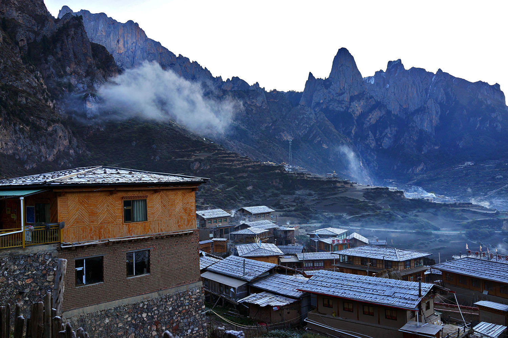
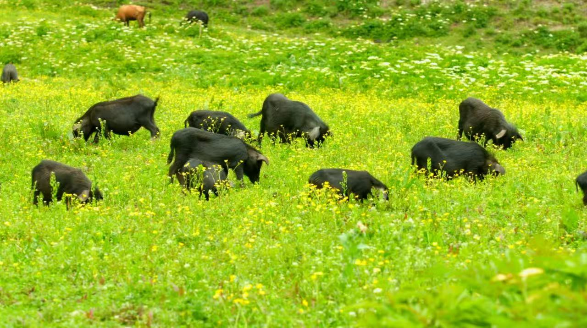
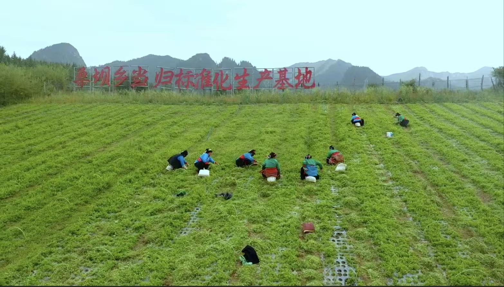

一、地图上的县域视角（并下推至地方尺度）
📍 缩放地图，观察白龙江干流、支流与聚落的分布关系
当前视角：迭部县域尺度二、核心知识点解析
1. 垂直地带性：一山有四季
迭部地处青藏高原东缘，海拔从白龙江谷底的 1600 米一直攀升至 4920 米。巨大的相对高差使得这里发育了完整的垂直自然带谱：谷底是阔叶林，向上依次为针阔混交林、针叶林、高山灌丛草甸，直至冰雪带。
这种“一山有四季，十里不同天”的景观，是教学中讲解“山地垂直地域分异规律”的绝佳本土案例。

迭部山地垂直自然带谱（从河谷到高山草甸）2. 河谷聚落：向白龙江要生存空间
迭部“九山半水半分田”，耕地资源极其宝贵。由于高海拔地区气候寒冷，藏寨和农田主要分布在白龙江干流及其支流的河谷地带。这里地势相对平坦、水源充足、热量条件较好，形成了典型的“河谷农业”。
同时，受地形限制，村落多依山就势而建，例如扎尕那的榻板房藏寨，正是人类适应高山峡谷环境的生动体现。

白龙江干流河谷地带的藏寨与农田三、地方尺度：走进扎尕那村落

扎尕那：石头城里的农林牧复合系统
扎尕那藏语意为“石匣子”，由四个藏族村落组成。这里的先民在海拔 2400—3300 米之间，创造了“高山放牧、山坡林业、河谷农耕”的农林牧垂直立体循环模式，2017 年被联合国粮农组织认定为全球重要农业文化遗产（GIAHS）。
从地理视角看，扎尕那是“地方尺度”上人地关系最和谐的缩影：民居依山就势（适应地形），榻板房外不见木（适应气候），梯田沿等高线分布（保持水土）。这不仅是地理知识的应用，更是藏族生态智慧的体现。
🔍 切换至全球尺度，看扎尕那的世界坐标 →四、迭部县特产：气候与地形的馈赠

蕨麻猪 国家地理标志
常年在高山草甸放养，以采食蕨麻（人参果）等野生植物为主，肉质紧实、味道鲜美，是迭部藏区特有的高原生态畜种。
迭部羊肚菌 林下经济
因菌盖表面凹凸不平、状如羊肚而得名。迭部森林覆盖率高，林下腐殖质丰富、气候阴凉湿润，是羊肚菌生长的天然温床。

藏中药材（党参/当归） 特色种植
迭部高海拔、大温差、强紫外线的气候条件，非常适合根茎类药材有效成分的积累，出产的党参、当归品质上乘。
五、迭部县行政区划
数据来源：迭部县人民政府（截至2026年）· 县人民政府驻电尕镇兴迭东街39号
六、教材链接与课标对应
| 对应教材章节 | 核心知识点 | 本页面的教学切入点（迭部案例） | 核心素养 |
|---|---|---|---|
| 八年级上册第二章 中国的自然环境 第四节 地形与气候 |
山地的垂直地域分异；地形对气候、植被的影响。 | 利用迭部 1600—4920 米的巨大高差，引导学生识别从河谷到高山的植被变化，理解“一山有四季”的地理成因。 | 区域认知：识别迭部山地垂直自然带的空间分异；综合思维：分析高差对气候与植被的综合影响；地理实践力：通过景观图观察垂直带谱变化。 |
| 八年级上册第四章 中国的经济发展 第二节 农业 |
农业区位因素；因地制宜发展农业。 | 结合“迭部特产”模块，分析蕨麻猪（高山草甸放牧）、羊肚菌（林下经济）、中药材（高原气候）各自的农业区位优势，理解因地制宜的原则。 | 综合思维：分析气候、地形对农业区位的影响；人地协调观：理解因地制宜、合理利用自然条件的意义；区域认知：认识迭部特色农业的空间分布。 |
| 七年级上册第五章 居民与文化 第二节 城镇与乡村（聚落） |
聚落与自然环境的关系；城镇与乡村的景观差异；传统民居的地域特色。 | 以扎尕那藏寨为例，观察榻板房“外不见木、内不见土”的建筑特征，分析其如何适应当地寒冷、多风、多雨雪的气候；对比城镇（电尕镇）与乡村（扎尕那村）的景观差异，理解聚落形态与自然环境、生产方式的关联。 | 人地协调观：理解传统民居与自然环境的适应关系，认识乡村聚落与城镇聚落的人地互动差异；综合思维：分析建筑特征与气候、地形、材料的关联，以及聚落形态与生产方式的关系；区域认知：认识扎尕那乡村聚落与电尕镇城镇聚落的地域特色及空间差异。 |
| 乡土地理行政区划认知 | 家乡的行政区划构成；县政府驻地与乡镇分布。 | 结合“迭部县行政区划”模块，让学生在地图上找到自己所在乡镇的位置，建立“县域—乡镇—村落”的空间层级认知。 | 区域认知：建立县域—乡镇—村落的空间层级认知；地理实践力：在地图上定位家乡所在乡镇；人地协调观：理解乡镇驻地与河谷地形的依存关系。 |
七、互动探究任务
任务：找找你的家乡在哪里
观察行政区划模块，迭部县共有 5 个镇、6 个乡。请在地图上找到你所在乡镇的大致位置（或扎尕那所在的益哇镇、俄界会议旧址所在的达拉乡）。说一说：你的家乡位于白龙江干流沿岸，还是在支流山谷中？